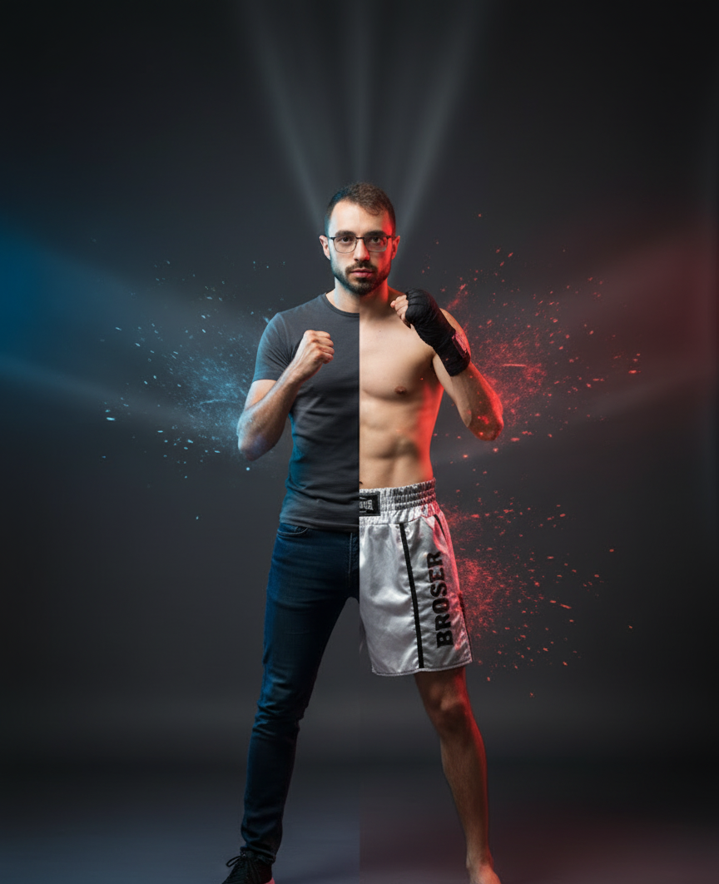

IA / LLMs
Asistentes virtuales con LLMs
Asistentes conversacionales para empresas con RAG, tool calling e integración por APIs/MCP. Diseño de testing y guardrails para respuestas trazables.
LLMs · RAG · MCP · PythonHola, soy Antonio Espejo
Construyo software e inteligencia artificial de día. Entreno y enseño kickboxing el resto del tiempo. Dos disciplinas, la misma obsesión por mejorar.
Ingeniero Informático especializado en ingeniería del software y Técnico Superior en Desarrollo de Aplicaciones Web. Tengo experiencia en desarrollo, gestión y mantenimiento web, prototipado de electrónica e integración de sistemas mediante APIs.
Actualmente estoy enfocado en IA generativa, desarrollando asistentes virtuales basados en LLMs: desde la definición del caso de uso hasta el demo funcional, con arquitectura conversacional, RAG, tool calling y evaluación de calidad.
Fuera del código soy técnico deportivo de kickboxing. Creé y mantengo aprendekickboxing.com y comparto entrenamiento en mi canal de YouTube. Persona resolutiva, responsable y de equipo.
Prompt Engineering · RAG · Context Engineering · Tool calling · MCP · Guardrails · Evaluación
Python · PHP · JavaScript · HTML5 · CSS3 · MySQL · Java · C / C++ / C# · jQuery · Git · APIs
Symfony · WordPress · Bootstrap · PrestaShop · Unity
Arduino · ESP32 · Raspberry/Orange Pi · LoRaWAN · RFID · MQTT · I2C/SPI · TCP/IP
Desarrollo y prototipado de asistentes basados en LLMs para empresas: arquitectura conversacional (intención, contexto, memoria, herramientas), pipelines de conocimiento, integración con sistemas vía APIs y MCP, y evaluación de calidad con control de alucinaciones.
Proyectos SmartOlive (IoT y LoRaWAN para datos agroalimentarios), PTA (geolocalización en interiores y trazabilidad industrial) y ColiBri (drones con navegación y sensores). Microsoldadura SMD/THT, firmware de microcontroladores e integración de software vía APIs.
Diseño y programación web y gestión de bases de datos con HTML, CSS, PHP, JavaScript, MySQL y PrestaShop. Desarrollo en Symfony.
Asistentes conversacionales para empresas con RAG, tool calling e integración por APIs/MCP. Diseño de testing y guardrails para respuestas trazables.
LLMs · RAG · MCP · PythonDispositivo IoT configurable que recolecta datos agroalimentarios en una almazara y los envía por LoRaWAN para visualización en tiempo real.
ESP32 · LoRaWAN · Firmware · APIsSolución comercial de geolocalización en interiores para optimizar la trazabilidad y la eficiencia de procesos industriales.
Geolocalización · APIs · DLLDrones para entornos industriales con navegación avanzada, autovuelo, cámaras, sensores de posicionamiento y RFID para seguimiento.
Drones · RFID · SensoresWeb propia que creé y mantengo para enseñar kickboxing online: técnica, entrenamiento y contenido para alumnos.
Visitar web →
La otra mitad de quién soy.
Soy cinturón negro 2º DAN y técnico deportivo de kickboxing (Nivel 1, Consejo Superior de Deportes). Entreno, compito y enseño. La misma disciplina, constancia y mentalidad de mejora continua que aplico al software la aplico al tatami.
Disponible para proyectos de software, IA generativa y colaboraciones de kickboxing.